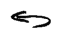

|
III Akademickie Mistrzostwa Polski w Programowaniu Zespołowym |
 |
WARSZAWA 23 - 24 PAŹDZIERNIKA 1998
|
III Akademickie Mistrzostwa Polski w Programowaniu Zespołowym |
|
WYNIKI |
| Miejsce | Zespół | Punkty | Czas | Rozwiązane zadania |
|---|---|---|---|---|
| 1 | Uniwersytet Warszawski II Bartosz Klin, Marcin Sawicki, Marcin Stefaniak | 6 | 1088 | A B C** E F* G* |
| 2 | Uniwersytet Warszawski I Adam Borowski, Jakub Pawlewicz, Piotr Sankowski | 5 | 1127 | B D* E F*** G** |
| 3 | Uniwersytet Warszawski III Łukasz Kowalik, Tomasz Waleń, Paweł Wolff | 4 | 867 | B** C** E* G** |
| 4 | Uniwersytet MK w Toruniu I Grzegorz Bobiński, Aleksander Binemann-Zdanowicz, Sebastian Smyczyński | 3 | 629 | A B G** |
| 5 | Uniwersytet Wrocławski I Marcin Bieńkowski, Mirosław Korzeniowski, Tibor Różański | 3 | 717 | B C*** G**** |
| 6 | Politechnika Poznańska I Piotr Zieliński, Łukasz Gwóźdź, Sławomir Piotrowski | 2 | 147 | B E* |
| 7 | Uniwersytet Wrocławski II Marcin Wrzeszcz, Krzysztof Szeruga, Jacek Suliga | 2 | 338 | B** G* |
| 8 | Politechnika Śląska II Tomasz Dziekoński, Arkadiusz Mazur, Marcin Sikora | 2 | 347 | B E* |
| 9 | Uniwersytet MK w Toruniu II Maciej Koprowski, Daniel Rychcik, Stefan Dydel | 2 | 467 | B* E**** |
| 10 | Uniwersytet MCS w Lublinie II Jacek Kisyński, Roman Zezula, Sebastian Bratko | 2 | 587 | B G**** |
| 11 | Politechnika Gdańska Bartosz Putrycz, Łukasz Kuszner, Adam Nadolski | 2 | 787 | D******* G****** |
| 12 | Politechnika Poznańska II Wiesław Bela, Arkadiusz Waliszewski, Beniamin Dziurdza | 1 | 84 | B |
| 13 | Politechnika Warszawska II Krzysztof Mroczek, Kajetan Kryszewski, Damian Ząbczyk | 1 | 85 | E |
| 14 | Politechnika Śląska III Wojciech Borczyk, Ireneusz Szcześniak, Michał Wierzbicki | 1 | 99 | B* |
| 15 | Uniwersytet MCS w Lublinie I Marcin Lasota, Grzegorz Możdżeń, Wojciech Koziej | 1 | 122 | B |
| 16 | Politechnika Poznańska III Przemysław Wesołek, Dawid Weiss, Filip Pankau | 1 | 140 | E** |
| 17 | Uniwersytet Łódzki II Piotr Warężak, Przemysław Gordinowicz, Paweł Prałat | 1 | 146 | B |
| 18 | Politechnika Wrocławska II Michał Wala, Adrian Mucha, Przemysław Gradalski | 1 | 153 | B |
| 19 | Uniwersytet Wrocławski III Krzysztof Mieloch, Łukasz Piwowar, Marcin Śliwa | 1 | 226 | B |
| 20 | Uniwersytet Jagielloński Jacek Gruszczynski, Jacek Ostrowski, Marek Stasielak | 1 | 248 | E* |
| 21 | Politechnika Śląska I Przemysław Mikler, Mariusz Rasiński, Andrzej Zwierzchowski | 1 | 279 | C*** |
| 22 | Uniwersytet Łódzki I Tomasz Józefiak, Michał Skrzypek, Jan Pustelnik | 1 | 303 | E** |
* oznacza nieudaną próbę zaliczenia zadania
 |